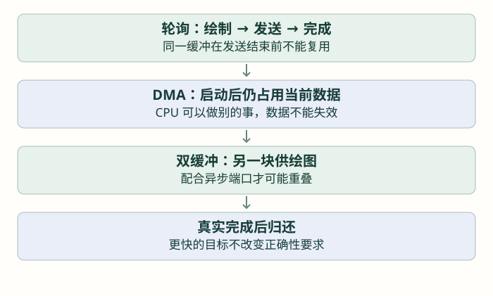

把刷新做稳：性能、DMA 改造与排错
先测量绘图和传输，再理解局部刷新、缓冲归还与异步状态，最后完成整套界面的功能验收。
前置：完成上一篇「让界面持续正确：数据、定时器与生命周期」。各篇独立示例按说明替换，不把多份页面创建循环叠在一起。
界面功能正确以后，再找刷新慢在哪一段
“感觉卡”可能来自绘图、SPI、应用长任务或处理函数调用不及时。先把一帧分成可观察的阶段：业务更新对象，LVGL 绘制，驱动发送，再通知完成。没有区分这些阶段就改 DMA，可能既没解决瓶颈，又增加并发问题。
本仓库当前使用十行单缓冲和轮询 SPI。先给它建立基线：固定页面内容、SCK、缓冲大小，分别观察小数值变化与整屏切换。不要一边改动画、一边改频率，再把结果归因于一个设置。

先算一条无法绕过的线速限制
RGB565 每像素两字节。240×240 全屏是 115200 字节，在 20 MHz 一位一时钟的理想传输下约为 46.08 ms，这还没有画图、命令与软件开销。DMA 减少 CPU 搬数据的工作，不会凭空减少线上的位数。
为什么只改一个数字，也可能画了很多像素？
LVGL 会记录需要重绘的区域。文字尺寸改变、透明叠层、阴影、渐变、滚动和大动画，都可能扩大实际重绘范围。局部更新不仅是最后少发几个字节，也要让对象结构与变化方式支持它。
先减少不必要工作：页面初始化一次，更新已有对象；值与状态没变时不重复写同样文字；固定数字区域，避免每次字符宽度变化影响整个布局；对不可见页面按业务需要降低更新频率。不能为了性能保留失效数据或跳过过期检查。
| 观察点 | 记录什么 | 能说明什么 |
|---|---|---|
| handler 周围的时间差 | 调用前后毫秒计数，或调试计时 | UI 处理占用多久；毫秒计数可能看不清很短动作 |
| 刷新回调收到的 area | 区域坐标、像素数和调用次数 | 是否小变化触发了大面积绘制 |
| CS 与 SCK 波形 | 实际传输长度与间隙 | 线速是否达到配置、软件是否插入长等待 |
| 内存与对象数量 | 稳定运行与反复切页后的变化 | 是否重复创建、忘记清理或过度缓冲 |
测量代码也会影响时间。不要在每个像素处理里输出长串口日志；先记录计数和时间，降低频率汇总。逻辑分析仪与示波器用于不同层次的观察，截图上的理想模型不能替代真实波形。
再考虑 DMA：先把“谁还能用缓冲区”写清楚
轮询版 flush 在传完之后返回，所以随后的 ready 表示传输不再占用缓冲。DMA 启动后主流程先返回，DMA 后面还会读取内存；这段时间缓冲区归传输使用，LVGL 不能提前覆盖它。
可靠的异步移植至少需要保存当前驱动指针、正在发送的区域与数据引用、忙状态，以及完成和错误结果。下面先按状态理解完整过程，不给一段只换函数后缀的伪完整驱动。
| 状态 | 当前允许做什么 | 退出条件 |
|---|---|---|
| 空闲 | 接收新的一批刷新数据 | 完整保存本次信息并启动 |
| 命令阶段 | 发送区域命令，设置片选与 D/C | 确认命令已完成，才能切像素数据 |
| 像素发送中 | 保持缓冲与控制线所需状态，不重复占用 SPI | 真正的 SPI 完成通知或错误 |
| 收尾 | 结束片选，按策略处理结果，归还缓冲 | 完成通知只发一次，再接受下一批 |
| 故障 | 停止新提交，清理硬件、数据与事务状态 | 明确重试或放弃策略，不能永久扣住库缓冲 |
STM32U5 普通非循环 SPI DMA 完成路径还可能依赖 SPI 的 EOT 中断收尾，SPI 章已经解释。DMA 通道搬完与最后一位出引脚并非同一时刻，不能在前一个时刻就释放片选并 ready。
当前 GC9A01 驱动的命令和坐标使用局部变量，CS、D/C 在函数中快速切换，也有没有上报错误的 void 接口。真正异步化要一起调整这些约定。把 GC9A01_DrawBitmap 内部的调用改成 _DMA，然后马上返回 ready，会导致未发完的数据被覆盖。
双缓冲什么时候才有帮助？
一块正在发送，另一块可以供 CPU 绘图，才有可能形成流水。必须有正确的忙状态和缓冲归还规则；如果底层仍一直阻塞等待，两块数组可能只增加 RAM。即使形成重叠，总速度仍受较慢阶段限制，并非简单变成两倍。
把显示移植的常见故障按层排查
| 现象 | 先分开验证 | 典型原因 |
|---|---|---|
| 一直黑屏 | GC9A01 纯色是否正常，再检查刷新调用 | 底层初始化、字节传输，或端口未注册 |
| 纯色正常，LVGL 颜色乱 | 直接颜色字节与库缓冲字节逐项比较 | LV_COLOR_16_SWAP 与八位 SPI 输出未统一，或重复交换 |
| 第一帧后不动 | flush 是否 ready、handler 是否继续 | 缓冲未归还，或主流程被长工作阻塞 |
| DMA 时偶发花屏 | 像素存储是否被改写、CS/D/C 是否提前变 | 生命周期或传输状态竞争 |
| 切页越久内存越少 | 创建、事件、定时器、动画和资源销毁 | 重复创建与遗漏清理 |
| 动画突然加速或很慢 | 只核对一套时基，观察 handler 间隔 | tick 重复累计，或以循环次数代替时间 |
| 圆屏角落内容不见 | 矩形地址与可见面板范围 | 并不一定是驱动丢像素 |
项目 GC9A01_WritePixels 的长度参数虽然写成 uint32_t，底层 HAL 的 Size 仍是 uint16_t。大的 RGB565 图像必须分块；当前十行批次为 4800 字节，不能据此推断一次整屏 115200 字节调用也正确。
先完成顺序清晰的轮询版本，再保存同样的纯色、窗口、数据有效性和销毁测试，作为以后 DMA 改造的对照。当前教程没有改写固件或运行生成代码；优化结论需要实际设备上的相同条件测量。
支线毕业练习
- 完成数值卡片与设置页，物理按键能切换或确认，焦点和状态明确。
- 模拟有效数据、无效、过期，显示与业务含义一致，不依赖真实传感器也能复现。
- 反复进入退出页面，说明对象、定时器与动画如何停止或复用。
- 列出从对象更新到 GC9A01 像素写入的完整路径，算出一次矩形传输长度。
- 记录一个固定场景的刷新面积、传输耗时和 RAM，再只改变一个因素比较。
完成后再进入 App、AI 或固件升级支线时，界面能够承担数据入口和状态反馈，底层驱动、图形库与业务职责也已经分开。
检查理解
参考与项目源码
按仓库实际的 LVGL 8.3.11 与本地头文件组织接口。教学图与网页模型不是设备实测；源码引用均使用 GitHub 文件页。完整索引见 资料来源。